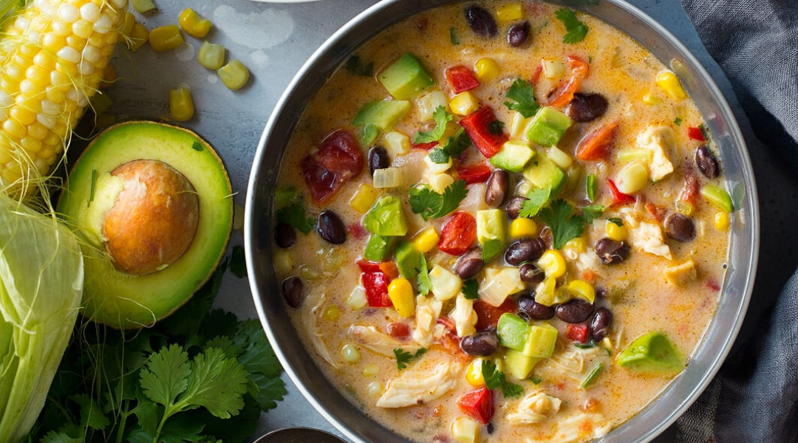

Odin Recipes
Home
Mexican Chicken Corn Chowder

Description
Chowder with pizzazz! If you're looking for the perfect thing to warm you up on a cold day this is it.
Yields: 8 servings
Prep Time:20 min
Cook Time: 35 min
Total Time: 55 min
Ingredients
- 1 1/2 lb. boneless skinless chicken breasts, cut into bite-size pieces
- 1/2 cup chopped onion
- 1 clove garlic, minced
- 3 Tbsp. butter
- 2 cubes chicken bouillon
- 1 cup hot water
- 3/4 Tsp. ground cumin
- 2 cups half-and-half cream
- 2 cups shredded monterey jack cheese
- 1 (14.75 oz.) can cream-style corn
- 1 (4 oz.) can diced green chiles
- 1 splash hot pepper sauce
- 1 tomato, chopped
- 1/4 bunch fresh cilanto sprigs
Directions
- In a dutch oven, brown chicken, onion, and galic in butter until chicken is no longer pink.
- Dissolve the bouillon in hot water; Pour into dutch oven, and season with cumin. Bring toa boi. Reduce heat to low, cover, and simmer for 5 minutes.
- Stir in cream, cheese, corn, chiles, and hot pepper sauce. Cook, stirring frequently, until the cheese is melted. Stir in chopped tomato. Garnish with cilantro.
Source: Allrecipes